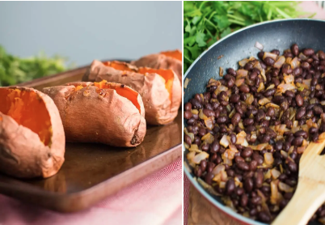

Black Bean Stuffed in Sweet Potatoes

It's packed with protein and fiber, and you can add toppings — like avocado or sour cream — depending on what's in your fridge.
Ingredients
- Sweet potatoes
- Black beans
- Onions
- Whatever spices you want
Steps
- Pre-heat oven to 350 degrees F.
- Place the sweet potatoes on a lightly greased baking tray and bake for 55-65 minutes or until a fork can easily be inserted into the flesh of the potatoes.
- Prepare the cream sauce by whisking together the cashew cream sauce, lime juice, and black pepper. Set aside.
- When the sweet potatoes have about 10 minutes left, heat the oil in a skillet over medium heat and then add in onion. Saute for 5 minutes until the onions begins to become translucent. Add in the spices stir and cook for an additional 3 minutes.
- Add the black beans to the skillet and toss to combine. Continue to cook, stirring frequently, until the black beans are fully heated through. About 5 minutes. Take off of heat and set aside.
- Once the sweet potatoes are done baking, let cool slightly. Once cool, cut the sweet potatoes open and shred the flesh from the skin so that the inside is mashed and easy to scoop out.
- Evenly spread the black bean mixture, avocado, cilantro, and cashew crema sauce on top of the 4 sweet potatoes.
- Serve immediately and ENJOY!!